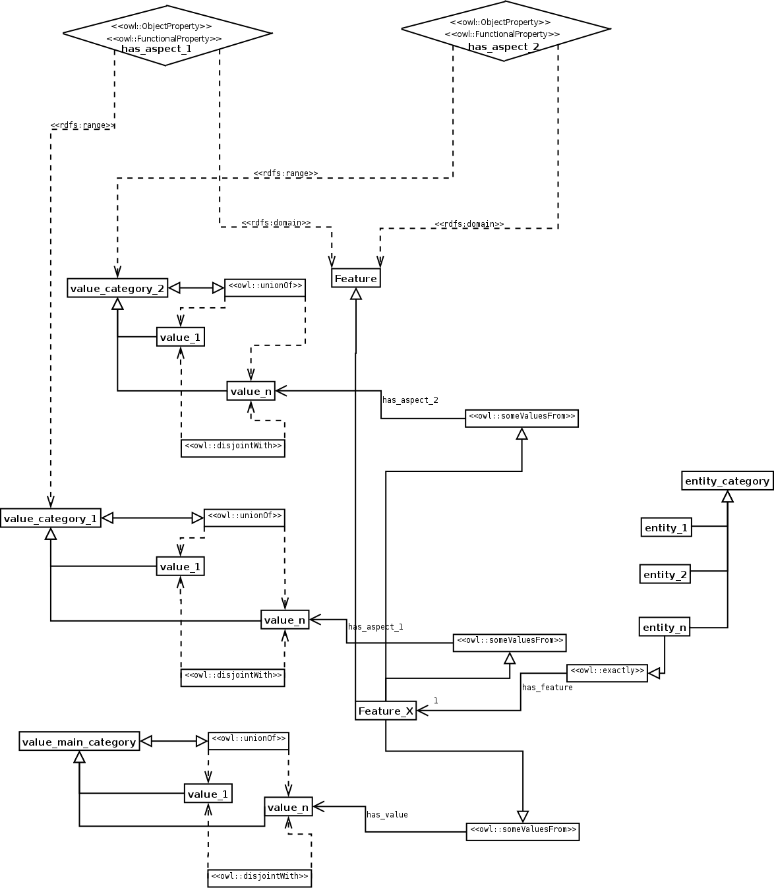
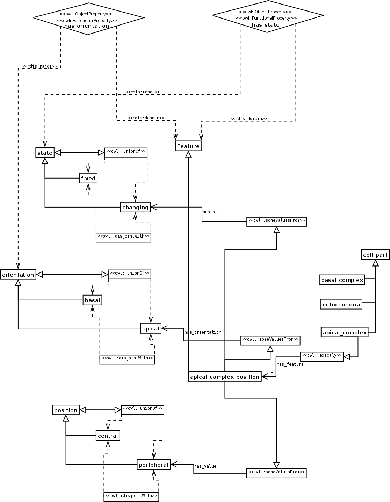

NAME: Entity-Feature-Value.
CLASSIFICATION: Good Practice.
MOTIVATION: This ODP is used to represent modifiers with multiple aspects, thus features (e.g. colour with a certain brightness and saturation).
AIM: To model features with the simplest structure possible.
STRUCTURE:
SAMPLE:
ELEMENTS: The most important elements are the object properties (one for each aspect), the feature, and the values of the aspects.
IMPLEMENTATION: For each aspect of the feature, an object property and a value partition should be created. For each of them, the domain should be the class Feature and the range the aspect value. The feature is really an Nary relationship ODP, and it is linked to each aspect by existential restrictions. The entity is linked to the feature with a Qualified Cardinality Restriction (QCR) of exactly one.
RESULT: The entities, que features of those entities and the aspects of the features are properly separated.
SIDE EFFECTS: Although this ODP can obviously handle multi aspect qualities, it is difficult to author because of the amount of entities that need to be added.
ADDITIONAL INFORMATION: See also the Entity-Quality ODP and the Entity-Property-Value ODP.
REFERENCES:
URL: http://odps.sourceforge.net/odp/owl/Good_Practice_ODP/Entity_Feature_Value.owl